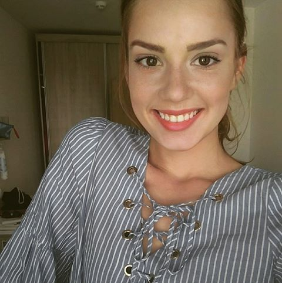
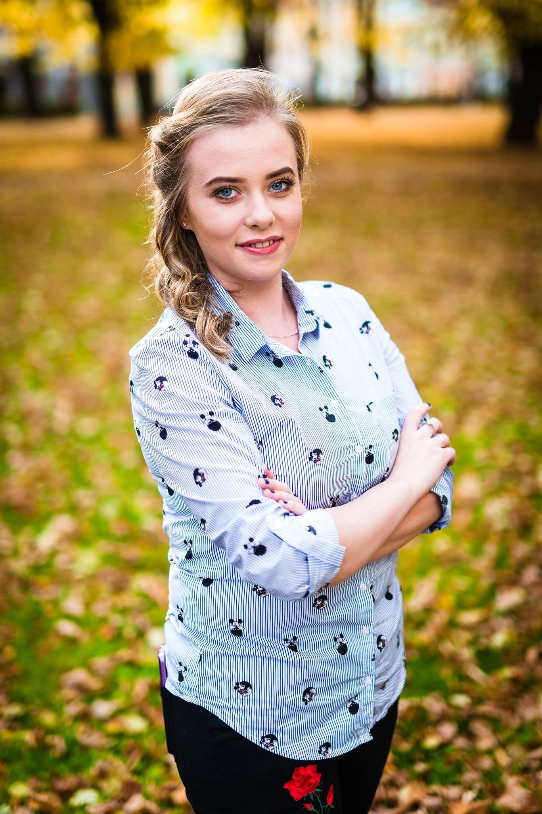
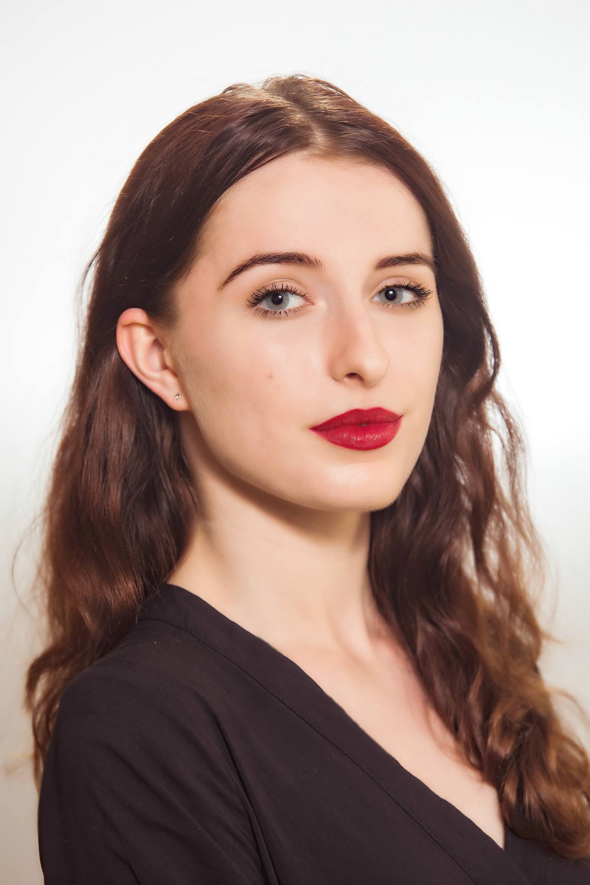
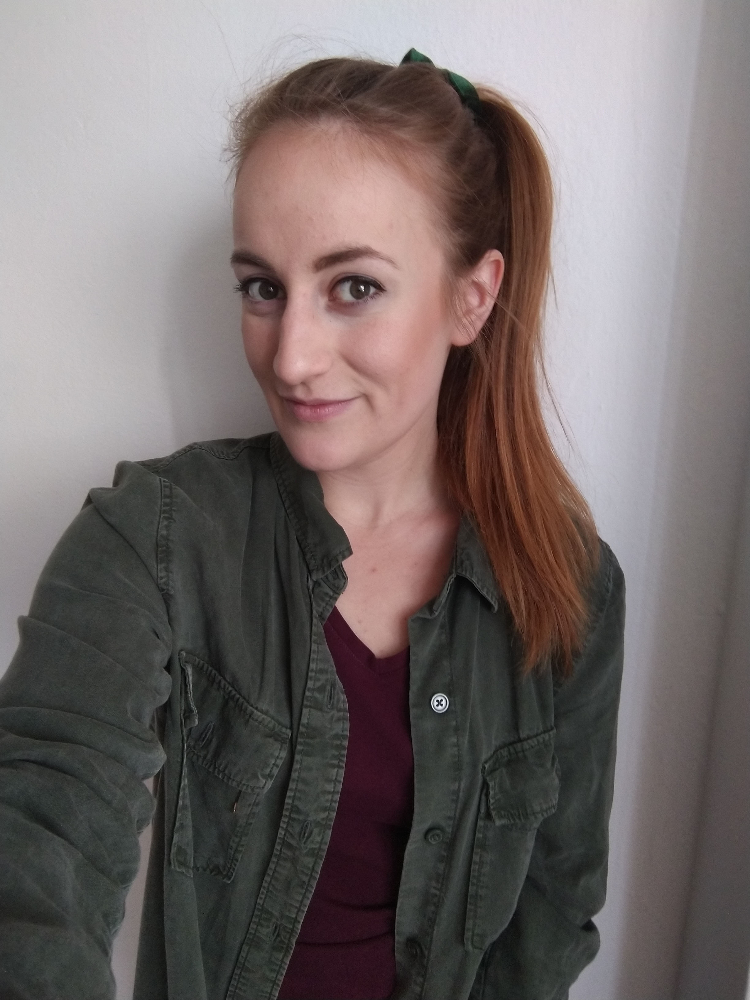
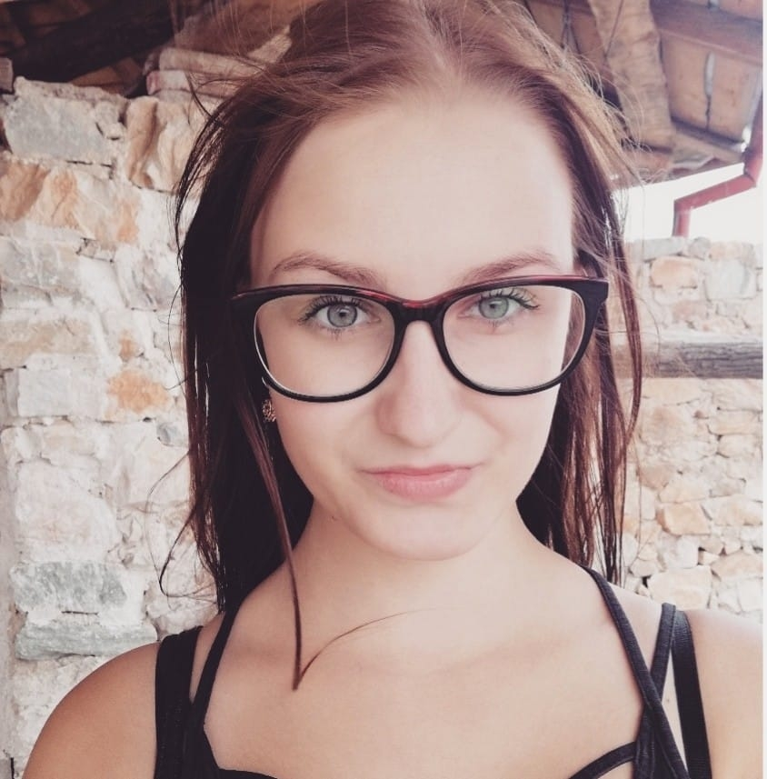
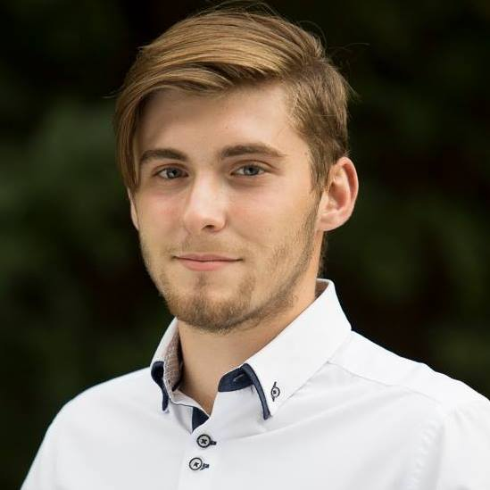

Slovenská asociácia študentov a absolventov psychológie
Čo je to SAŠAP?
Slovenská asociácia študentov a absolventov psychológie (SAŠAP) je občianské združenie pôsobiace na území Slovenska už od roku 2009. Medzi jeho ciele patrí združovať študentov a absolventov študijného programu psychológia na jednotlivých univerzitách, za účelom vytvárania komunity na báze dobrovoľníctva, zápalu pre psychológiu, zodpovednosti, vzájomnosti a súdržnosti. Členovia združenia pod jeho vedením organizujú diskusie, prednášky, workshopy a podobné aktivity, ktorými sa snažia, pomocou svojich hostí a spoluorganizátorov, sprostredkovať psychologické poznatky študentom, záujemcom a širokej verejnosti, odbornej či neodbornej. SAŠAP taktiež patrí pod European Federation of Psychology Students´ Associations (EFPSA), ktorá mu sprostredkúva sociálne kampane a celoeurópske možnosti angažovania členov (trénerské programy, kongresy a konferencie, medzinárodné meetingy).
Kto sme
Bibiána Jozefiaková
Prezident SAŠAP
Prezident SAŠAP

Aktuálne som študentkou piateho ročníka na Prešovskej univerzite. SAŠAP ma sprevádza takmer
celým vysokoškolským štúdiom a aj to sa zaslúžilo o moju stále trvajúcu lásku k psychológii. Vďaka
SAŠAPu som mala možnosť rozvíjať svoje soft skills, za čo som nesmierne vďačná. Spoznala som veľa
skvelých ľudí, ktorí majú rovnaké záujmy ako ja a vďaka ktorým sa nám stále darí živiť SAŠAP energiu
na našich univerzitách.
Andrea Pačnárová
vedúca pobočky SAŠAP Prešov
vedúca pobočky SAŠAP Prešov

Som študentkou psychológie na Prešovskej univerzite a momentálne pôsobím ako vedúca
pobočky v Prešove. Mojou úlohou v SAŠAPe je okrem vedenia pobočky aj usmerňovanie
organizácie akcií - na ktorých sa podieľa celý tím, komunikácia s vedením SAŠAPu, s
univerzitou, s hosťami a taktiež manažment členov. V SAŠAPe som momentálne druhý rok
a mám na ňom rada jeho autenticitu, jedinečnosť a jeho princípy. A samozrejme skvelých
ľudí, ktorým ďakujem nielen za spoluprácu, ale aj priateľstvo.
Eva Lörincová
Viceprezident pre externé záležitosti, vedúca pobočky SAŠAP Košice
Viceprezident pre externé záležitosti, vedúca pobočky SAŠAP Košice

Študujem psychológiu a momentálne je mojou alma mater Univerzite Pavla Jozefa Šafárika v Košiciach. V SAŠAPe
som od prvého ročníka, sprevádza ma celým mojim doterajším štúdiom. Spočiatku ako aktívny člen, no dnes ako
vedúca pobočky manažujem mojich úžasných kolegov a spolu organizujem podujatia, ktoré ozaj stoja za to.
Spolupracujeme s vedením univerzity a s početným množstvom študentských spolkov. Verím, že naše spoločné
úsilie má zmysel na rozširovaní obzorov študentov a širokej verejnosti.
Ľubica Paulisová
Member Representative of Slovakia in EFPSA
Member Representative of Slovakia in EFPSA

Už štvrtý rok študujem na Univerzite sv. Cyrila a Metoda v Trnave odbor psychológia. V SAŠAPe som
od nástupu na vysokú školu a momentálne zastávam pozíciu MR za Slovensko v EFPSA. Aktivity
v SAŠAPe mi otvorili očká, našla som si veľa priateľov z každého kútu Slovenska a dostala som sa do
EFPSA. Mojou úlohou je prepájať SAŠAP s EFPSA, vytvárať medzi nimi most, aby študenti na
Slovensku mali informácie o psychologickom dianí v Európe. Tam som získala priateľstvá z celej
Európy (sveta) a množstvo skúseností, ktoré využívam v každodennom osobnom i študentskom
živote. Obe organizácie mi poskytli priestor tvoriť a byť tvorivou, komunikovať nie len materinskom
a anglickom jazyku, ale i zodpovednosti.
„The best moment is, when you find your best Slavic friend “
„The best moment is, when you find your best Slavic friend “
Simona Hrubá
vedúca pobočky SAŠAP Nitra
vedúca pobočky SAŠAP Nitra

Som študentkou Univerzity Konštantína Filozofa v Nitre, študijný program psychológia. V SAŠAPe
pôsobím už štvrtý rok, z toho istú dobu ako vedúca nitrianskej pobočky. Na SAŠAPe zbožňujem
predovšetkým to, ako spája študentov a ostatných nadšencov psychológie a to nielen lokálne, na
danej univerzite, ale na celom Slovensku. Okrem získania mnohých priateľstiev v SAŠAPe, toto
združenie precvičuje moje zručnosti v organizovaní zaujímavých eventov a umožňuje mi tráviť môj
čas čo najzmysluplnejším spôsobom.
Jakub Mihňák
viceprezident pre interné záležitosti, vedúci pobočky SAŠAP Trnava
viceprezident pre interné záležitosti, vedúci pobočky SAŠAP Trnava

Som študentom Univerzity sv. Cyrila a Metoda v Trnave a vzdelávam sa v psychológii. Mojou úlohou v SAŠAPe je
spravovať jeho členov a pomáhať im v organizovaní akcií. To či už na celom Slovensku, alebo len v Trnave. V
SAŠAPe som už tretí rok a pomohol mi získať mnoho priateľov a skúseností, ktoré by som za iných okolností
toľko nenazbieral.
Slovenská asociácia študentov a absolventov psychológie
Prezident prezident.sasap@gmail.com
Viceprezident viceprezident.sasap@gmail.com
Prezident prezident.sasap@gmail.com
Viceprezident viceprezident.sasap@gmail.com
IČO: 42139431
DIČ: 2022898438
Sídlo: Odbojárov 10/A 82005 Bratislava - mestská časť Nové Mesto
DIČ: 2022898438
Sídlo: Odbojárov 10/A 82005 Bratislava - mestská časť Nové Mesto